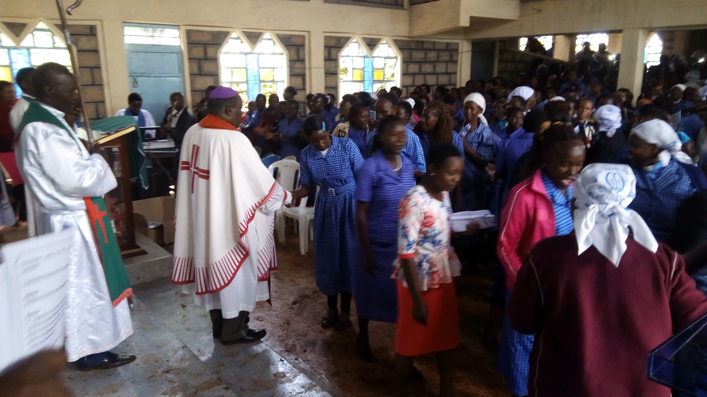

Training children in knowledge of God
we believe that character training can be best done by the child's mother
we believe that character training can be best done by the child's mother
we believe that character training can be best done by the child's mother

Promote conditions in the society favourable to stable family life and protect children
God values the life of single parents and windows